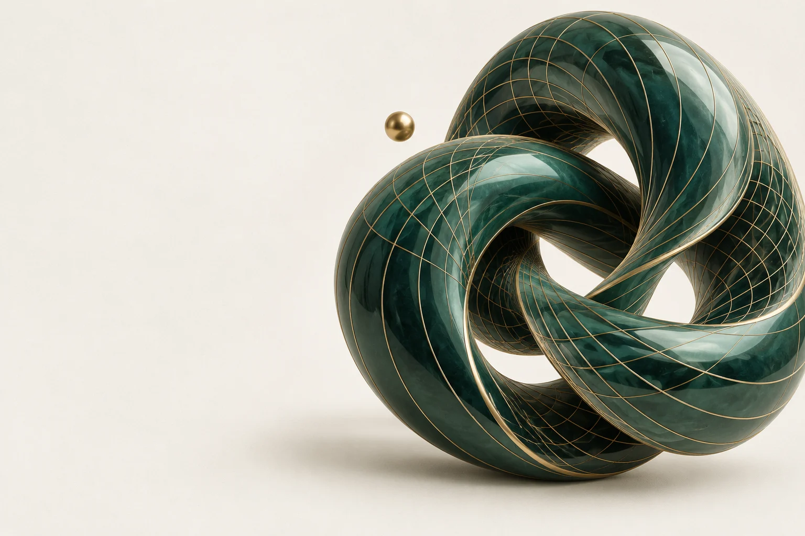

用下方滑桿或方向鍵微調參數；數值與公式會同步更新。
01 / 操作
互動參數
02 / 思考
觀察重點
引導問題
即時公式
先預測結果，再按「揭示公式」驗證你的推理。
常見陷阱
進階挑戰
先自己作答，再展開解答
03 / 記錄
我的實驗筆記
留下一個觀察、一個理由，或下次想驗證的問題。
不需要登入。收藏、探索進度與筆記保存在此裝置；清除瀏覽器資料會移除紀錄，建議定期匯出備份。分享網址只包含模組與參數。

YOUR MATHEMATICAL WORKSPACE
選一個主題，調整參數，讓圖像帶你發現規律。
用下方滑桿或方向鍵微調參數；數值與公式會同步更新。
01 / 操作
02 / 思考
先預測結果，再按「揭示公式」驗證你的推理。
03 / 記錄
留下一個觀察、一個理由，或下次想驗證的問題。
不需要登入。收藏、探索進度與筆記保存在此裝置；清除瀏覽器資料會移除紀錄，建議定期匯出備份。分享網址只包含模組與參數。